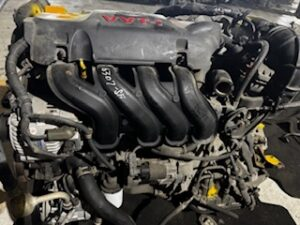
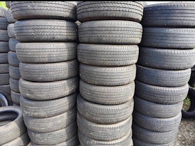
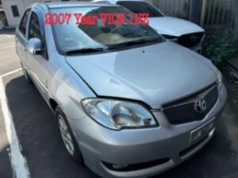

ORAND AUTOS provides practical support for international buyers looking for used auto parts sourcing, supplier coordination, export arrangement, and cross-border communication from Taiwan.
We work in a clear sourcing and coordination role, helping buyers better connect with Taiwan supply channels, manage communication, and move transactions forward in a more efficient and workable way.
Our focus is on practical execution, responsive coordination, and stable business support for clients who need a more reliable bridge between product sourcing and export follow-up.
Taiwan Used Auto Parts Sourcing & Export Support



ORAND AUTOS supports international buyers who need practical assistance in Taiwan used auto parts sourcing, supplier coordination, and export-related communication.
We understand that in cross-border automotive trade, buyers often need more than just product information. They also need timely follow-up, clearer communication, and a more workable sourcing process.
Our role is to help bridge that gap through practical coordination support, supplier-side communication, and export arrangement assistance based on real trade workflow needs.
We aim to provide a more stable and dependable support structure for buyers seeking Taiwan-based sourcing and export follow-up in the used auto parts sector.
We act as a sourcing & coordination agent, assisting international buyers in Taiwan automotive sourcing, export arrangement, and trade communication.
We act solely as a sourcing & coordination agent. We do not act as the seller, exporter, shipper, or carrier of the goods.
This positioning allows us to focus on practical support, coordination efficiency, and transparent business communication while keeping the role clearly defined.
Practical support for sourcing, supplier-side coordination, export communication, and international buyer assistance.
Support in identifying relevant used auto parts supply options in Taiwan according to buyer demand, target market, and communication needs.
Practical coordination support between international buyers and Taiwan-side suppliers to improve communication, follow-up efficiency, and sourcing clarity.
Assistance with export-side communication and arrangement follow-up so buyers can move more smoothly from sourcing to shipment preparation.
If you are looking for Taiwan used auto parts sourcing support, supplier coordination, or export-related assistance, feel free to contact us directly.
We welcome inquiries from international buyers who value practical follow-up, clearer communication, and a more workable sourcing process.